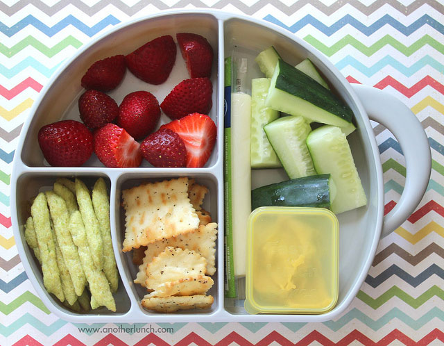

Snack Plate
Ingredients
- Hummus
- Favorite vegetables (carrots, cucumbers, bell peppers, etc)
- Favorite fruit (grapes or apples)
- Pretzels or other type of favorite cracker
Instructions
Place all ingredients on a plate and enjoy. This seems pretty self-explanatory, but I do this when I need to use up some produce or want a lunch that isn’t too heavy.